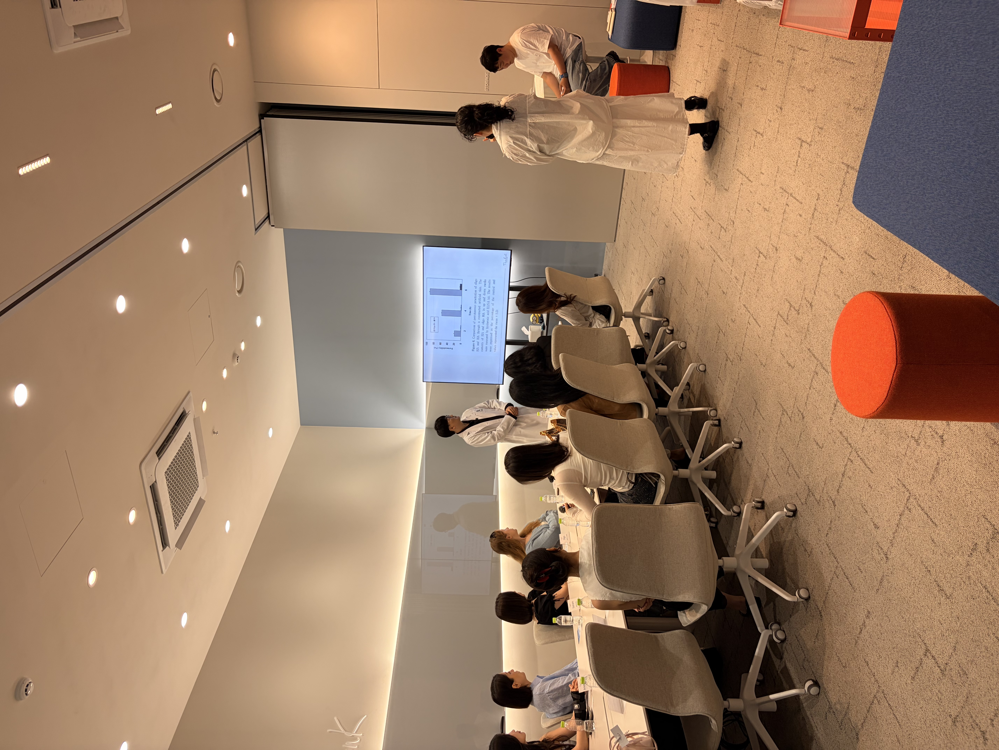
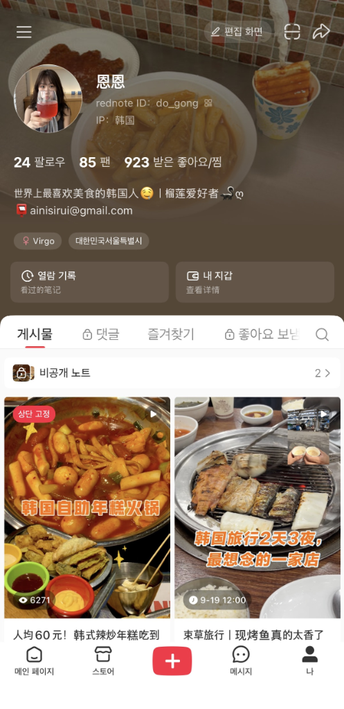
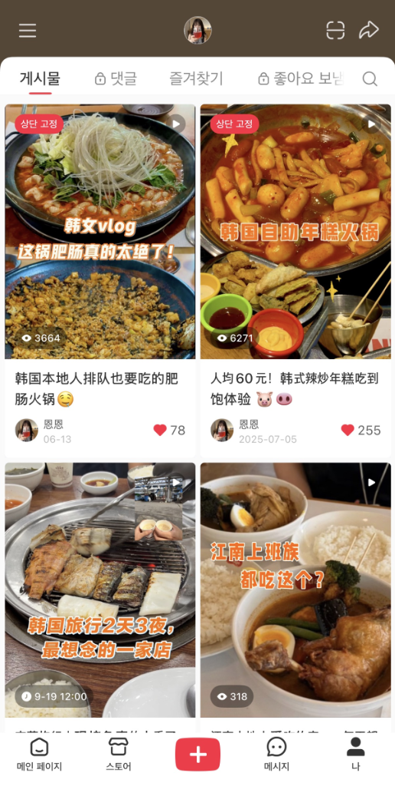
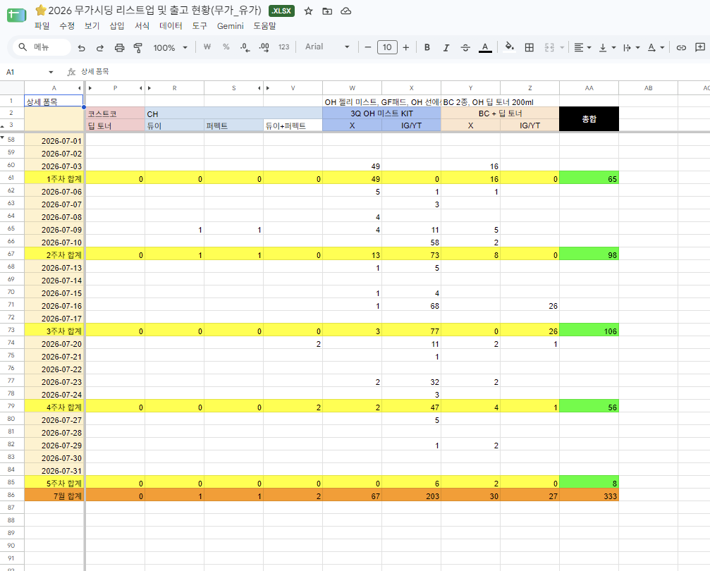
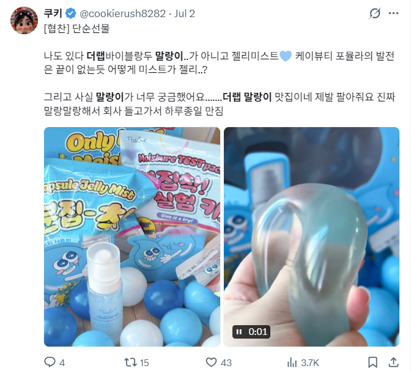
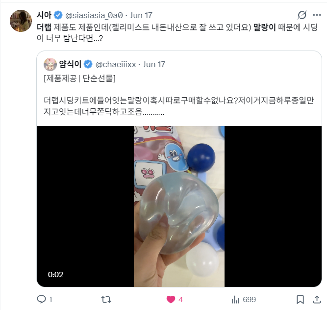

2000.09.08
저는 쑤저우 교환학생과 샤홍슈 채널 직접 운영을 통해 중국 Z세대의 온라인 콘텐츠 문법을 치열하게 훈련했습니다. 이후 올리브영 현장에서 글로벌 관광객들의 소비 패턴을 직접 관찰하며, '온라인 트래픽을 오프라인 구매로 전환시키는' 마케팅의 본질을 체득했습니다.
국내 뷰티 크리에이터 60인 매니징 및 기획 의도 디테일 검수
각 SKU별로 세분화하여 총 1,664명의 크리에이터 대상 시딩 운영
중국 Z세대 플랫폼 특성 연구 및 위챗 O2O 프로모션 기획
외국인 관광객 세일즈 및 샤홍슈 기반 오프라인 구매 패턴 분석
현지 트렌드를 반영한 푸드 컨셉의 샤홍슈 숏폼을 운영해 누적 2.5만 뷰를 달성하며 채널 기획력을 입증했습니다.
쑤저우 교환학생 당시, 위챗 홍보와 QR 유입 전략을 통해 단 3일 만에 15명의 실제 오프라인 행사 참여를 이끌어내며 뛰어난 플랫폼 활용 능력을 증명했습니다.


뷰티 브랜드 마케팅 인턴 시, 국내 뷰티 크리에이터 60여 명에게 기획 의도를 명확히 전달하고 프레임 단위로 영상을 꼼꼼히 검수하여 성공적인 협업을 완수했습니다.
1만 명 리스트업이라는 방대한 데이터를 오차 없이 관리하고 스케줄 지연 없이 프로젝트를 리드했습니다.

시딩 키트의 핵심 굿즈인 '말랑이'의 완성도를 높이기 위해, 40곳 이상의 판매처를 리스트업 및 직접 컨택하여 꼼꼼한 샘플링을 거치는 등 최적의 퀄리티를 소싱해 냈습니다.
그 결과 목표 오가닉 노출률(30%)을 초과한 36.5%를 달성했으며, 추가로 트위터 누적 인게이지먼트 2,250건 이상의 자발적 확산을 이끌어냈습니다.

